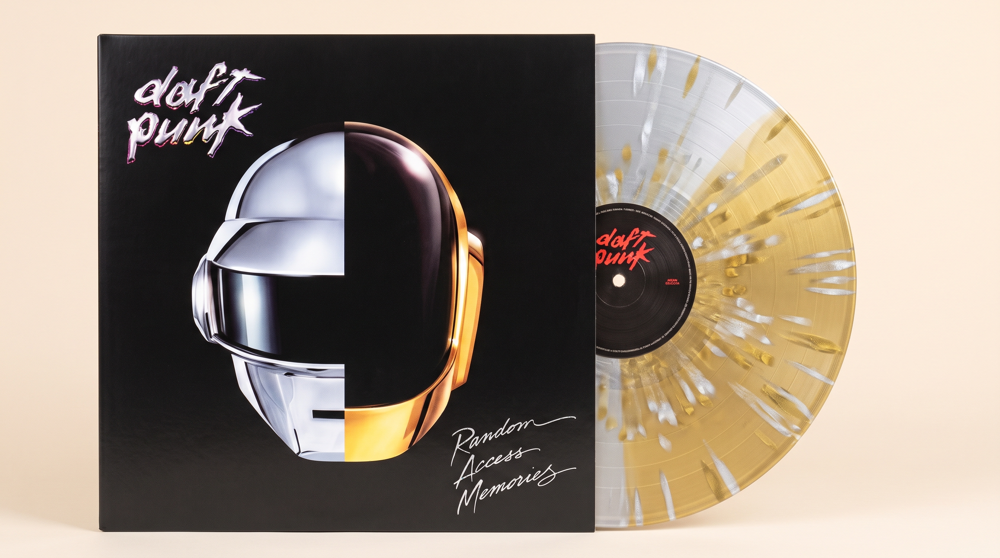
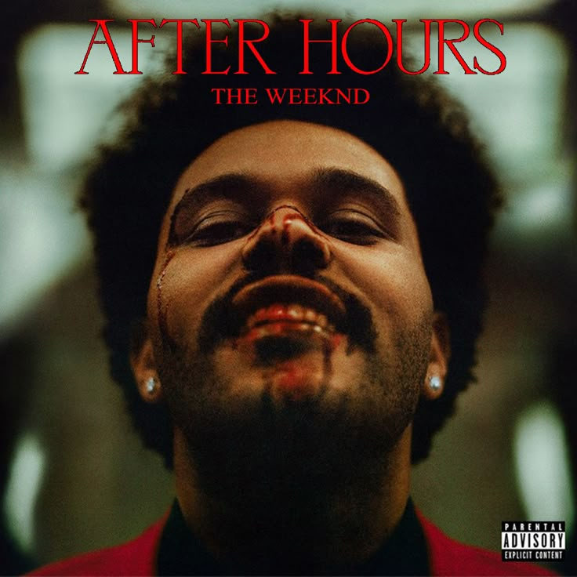
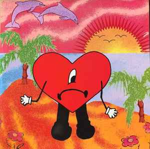

Random Access Memories · Daft Punk
Edición especial para coleccionistas prensada en vinilo negro de 180 gramos. Masterización analógica con sonido envolvente de alta fidelidad.

After Hours · The Weeknd
The Weeknd's latest chapter via XO/Republic Records, After Hours, features global hits like "Heartless" and "Blinding Lights"

Un Verano Sin Ti · Bad Bunny
El álbum más exitoso de Bad Bunny, con canciones que combinan reggaeton y trap en una experiencia auditiva única.